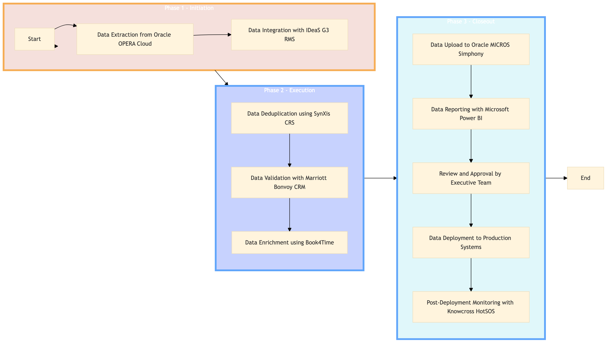

| Role | Steps |
|---|---|
| IT Manager | 1.1 1.2 2.1 3.1 3.4 3.5 |
| CRM Specialist | 2.2 2.3 |
| Executive Manager | 3.3 |
| Step | Name | Role | System | Input | Output | KPI | Dec? | Exc? | Pain Point / Risk |
|---|---|---|---|---|---|---|---|---|---|
| 1.1 | Data Extraction from Oracle OPERA Cloud | IT Manager | Oracle OPERA Cloud | Guest profile data | Extracted guest data file | Completion within 2 hours | N | Y | Data extraction errors due to system updates |
| 1.2 | Data Integration with IDeaS G3 RMS | IT Manager | IDeaS G3 RMS | Extracted guest data file | Integrated guest data file | Completion within 1 hour | N | Y | Integration conflicts with existing data structures |
| 2.1 | Data Deduplication using SynXis CRS | IT Manager | SynXis CRS | Integrated guest data file | Deduplicated guest data file | Completion within 30 minutes | N | Y | High volume of duplicate entries |
| 2.2 | Data Validation with Marriott Bonvoy CRM | CRM Specialist | Marriott Bonvoy CRM | Deduplicated guest data file | Validated guest data file | Completion within 2 hours | Y | N | Manual validation errors due to complex data rules |
| 2.3 | Data Enrichment using Book4Time | CRM Specialist | Book4Time | Validated guest data file | Enriched guest data file | Completion within 1 hour | N | Y | Inaccurate booking data affecting enrichment |
| 3.1 | Data Upload to Oracle MICROS Simphony | IT Manager | Oracle MICROS Simphony | Enriched guest data file | Uploaded guest data | Completion within 30 minutes | N | Y | System compatibility issues during upload |
| 3.2 | Data Reporting with Microsoft Power BI | IT Manager | Microsoft Power BI | Uploaded guest data | CRM Data Quality Report | Completion within 1 hour | N | Y | Slow performance affecting report generation |
| 3.3 | Review and Approval by Executive Team | Executive Manager | CRM Data Quality Report | Approved CRM Data Quality Report | Completion within 24 hours | Y | N | Disagreement on data quality metrics | |
| 3.4 | Data Deployment to Production Systems | IT Manager | Oracle OPERA Cloud, IDeaS G3 RMS, SynXis CRS, Marriott Bonvoy CRM | Approved CRM Data Quality Report | Deployed guest data across systems | Completion within 2 hours | N | Y | System downtime affecting deployment |
| 3.5 | Post-Deployment Monitoring with Knowcross HotSOS | IT Manager | Knowcross HotSOS | Deployed guest data | Monitoring report | Completion within 1 hour | N | Y | False positives in monitoring alerts |
Ensures high-quality and deduplicated CRM data to enhance guest experience and operational efficiency at a Marriott full-service hotel.